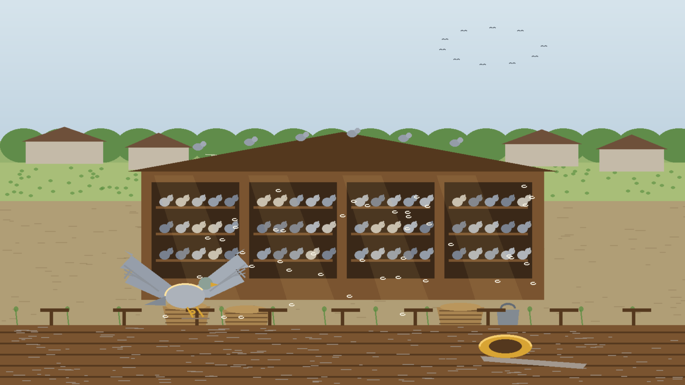
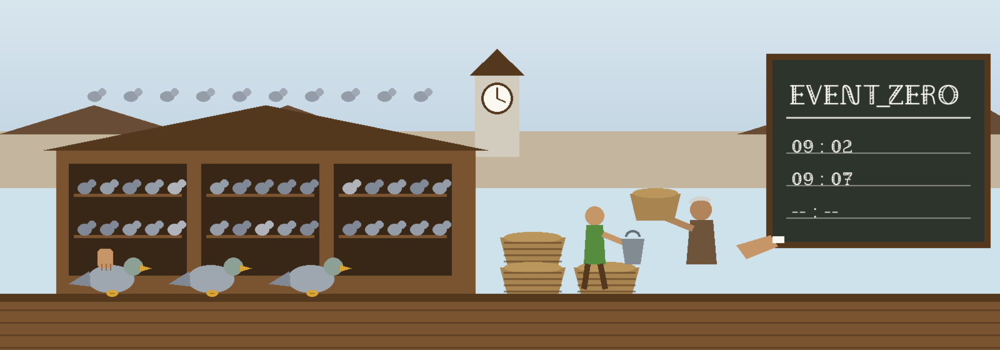

Case file EZ / fake_malware / 01 Examiner: Epsilon0xCell
Event Zero: the fake_malware case file, chalked on the arrivals board
Classification: one specimen, examined on paper. Specimen is a real Mach-O 64-bit ARM64 executable, 33,920 bytes, held in the repo as the test sample for my analyzer. Examined, not executed.




What was built
I built Event Zero because I wanted a first look at a suspicious file without handing it to a website and without running it. I point the tool at a path, and it reads the bytes and tells me what it can prove from those bytes alone: hashes, format, entropy, strings, and the indicators hiding in those strings.
Local mode is the part I trust for a first look. It is pure Python standard library, it works offline, it needs nothing installed beyond Python itself, and it never executes the sample. It writes a plain summary to the terminal and a JSON report beside it, and that report states its own limits in writing.
Autonomous mode is the longer route. It builds a BlackArch container, copies the sample in, and lets Gemini direct standard analysis tools over several rounds until the model marks the work complete or the iteration cap is reached. I keep both modes in one file so the command line, the exit codes, and the report shape stay in one place.
Handling note
Sample handling in local mode: read as bytes, never executed. Network in local mode: none. Dependencies in local mode: none beyond Python itself.
Links: the repository and my GitHub profile.
Findings sheet, from my own re-run
I re-ran the tool myself for this rebuild, in a copy of the repo, with the command shown under Run it below. The numbers are that run, filed as I found it, untouched.
strings extracted from the specimen
IP addresses found in those strings
whole file entropy, out of 8.0
- File
- fake_malware
- Size
- 33,920 bytes
- SHA-256
- c9ab06a4fd594a82eb36d1aeb72e83e99df77a2ccd6a8ebd0ad078dd6b707802
- MD5
- a61191886fcf20bc8df01fe64c99203f
- Format and architecture
- Mach-O (64-bit), ARM64
- Entropy
- 0.879 / 8.0
| Item | As printed by the run |
|---|---|
| Segments | __PAGEZERO, __TEXT, __DATA_CONST, __LINKEDIT |
| Sections | __text, __stubs, __cstring, __unwind_info, __got |
| Linked library | /usr/lib/libSystem.B.dylib |
| Strings | 59 extracted |
| IP addresses | 127.0.0.1 and 192.168.1.100 |
| Keyword hits | credential, /bin/bash, socket |
The run also prints an assessment in plain sentences: the low entropy comes from large zero padded regions, strings alone do not prove the sample contacts those addresses, keyword hits are leads for review rather than proof, and a file with no indicators is not thereby proven safe.
A short piece of the engine, as written
@staticmethod
def _shannon_entropy(data: bytes) -> float:
if not data:
return 0.0
# I count bytes in a plain Python loop. That is slow on a large
# file, and I keep it because local mode promises standard
# library only and the files I analyse are small enough that
# the simple version wins.
counts = [0] * 256
for b in data:
counts[b] += 1
entropy = 0.0
for c in counts:
if c:
p = c / len(data)
entropy -= p * math.log2(p)
return entropy
Excerpt: autonomous_docker_malware_analyzer.py, lines 1713 to 1729 at the head this page was first built from, as written. This is the whole file Shannon entropy that local mode reports.
Exhibits: the sheets I drew by hand
I drew these sheets on paper to explain a tool that has no screen of its own. I file them here in order, as exhibits.


How local mode computes what it claims
- Hashes: MD5, SHA-1 and SHA-256.
- Real header parsing for Mach-O including fat binaries, ELF, and PE.
- Entropy, whole file Shannon entropy.
- Strings: ASCII and UTF-16LE.
- Indicators: URL and IP indicators found in strings.
- The suspicious keyword watchlist, presented as leads and not proof.
- EICAR detection by known SHA-256.
- A rule based assessment that states its own limits in the report.
Static reading only. No indicators found is not a certificate that a file is safe.
The long route: autonomous mode
Autonomous mode builds a BlackArch Docker image, places the sample at /analysis/malware_sample, and Gemini directs file, strings, readelf and radare2 across iterations until it marks the work complete or the cap is reached. If the API fails, a fallback static analysis runs instead. It writes a timestamped JSON report; the container is removed and the image is kept.
| Point | Local | Autonomous |
|---|---|---|
| Needs | Python 3.8 or newer. Nothing else. | Docker running, plus a Google Gemini API key. |
| Sample handling | Read as bytes, never executed, no network. | Copied into a container; analysis tooling runs against it there. |
| Writes | JSON report beside the run, or the path passed with the output option. | Timestamped autonomous report. Container removed, image kept. |
| Stops when | The single pass finishes. | The model marks the work complete, or the iteration cap is reached. Default cap is 50. |
| Exit codes | 0 on success, 1 on a clean explained failure such as a missing file, a missing key, or Docker unavailable, 2 on bad command line arguments. | |
Run it
git clone https://github.com/Epsilon0xCell/Event_Zero.git cd Event_Zero python3 autonomous_docker_malware_analyzer.py --file fake_malware --local
export GEMINI_API_KEY="your key here" python3 autonomous_docker_malware_analyzer.py --file /path/to/sample
python3 -m unittest discover -s tests -v
The suite checks hashes against the standard library, checks EICAR detection, parses the bundled Mach-O sample, and runs the command line end to end in local mode.
Where it stands, and disclosure on the specimen
Local mode is the finished half of this tool in the way that matters to me: it runs anywhere Python runs, it states its limits inside its own report, and I can verify every number it prints by hand. Static analysis only is a real limit, and I would rather print that limit than dress a lead up as a verdict.
Autonomous mode works, but its container path is still verified by hand more than by test. If I return to this repo, that is the gap I would close first.
For a genuinely hostile file, use a hardened, network isolated virtual machine rather than a workstation. Neither mode in this tool replaces a real sandbox.
fake_malware is a real Mach-O 64-bit ARM64 executable, not inert text. If executed, its embedded steps write whoami, id, and uname output to files under /tmp, create /tmp/persistence.sh and make it executable (written, not installed in any autostart location), dump a process list to /tmp, remove a test file, and attempt a connection to 127.0.0.1:4444.
Its printed simulation list includes a crypto mining simulation line, with no mining pool endpoint in the binary. Local mode never executes it: local mode reads it as bytes and analyzes it, and autonomous mode runs analysis tooling on it inside a container.
I treat this file as live sample code. I do not execute it outside a controlled analysis environment, and I ask anyone who clones the repo to do the same.